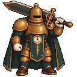

종루수호자 벨가드 · 대검의 충신
말없는 오르덴의 충신. 정면 시안 B로 만든 8방향 캐릭터와 동작 7개(PixelLab). 게임용은 PixelLab이 그린 폭발·궤적·불티·돌가루·바닥 금을 지운 그림이고, 칼에 붙어 지울 수 없던 프레임은 뺐습니다(칸 오른쪽 위에 뺀 프레임 번호). 충격·궤적은 게임이 따로 그립니다. 게임용은 실제 프레임 시간대로, 원본은 초당 10프레임으로 재생합니다.
8방향 (남 · 남동 · 동 · 북동 · 북 · 북서 · 서 · 남서)